Pourquoi douze notes et pas treize ? Pourquoi deux instruments jouant la même note ne sonnent-ils pas pareil ? Tout tient dans une suite de nombres — et dans une corde qu'on peut tendre plus ou moins fort.
Les bases : ce qu'est un spectre, ce qui distingue un son pur d'un son complexe, ce qu'on appelle la hauteur — et pourquoi une note porte toujours plusieurs fréquences à la fois.
L'être humain perçoit le monde à l'aide de signaux porteurs d'information, dont certains sont de nature sonore. De l'Antiquité jusqu'à nos jours, il a combiné les sons de manière harmonieuse pour en faire un art : la musique.
Un son est une onde mécanique périodique. Le mathématicien Joseph Fourier (1768-1830) a montré qu'un signal périodique de fréquence f₁ peut être décomposé en une somme de signaux sinusoïdaux : un de fréquence f₁ (la fréquence fondamentale) et d'autres de fréquences fn, multiples de la fondamentale (les fréquences harmoniques).
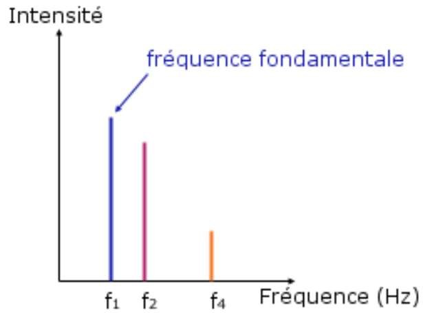
L'analyse spectrale est réalisée par un logiciel spécialisé — Audacity en salle — après un enregistrement.
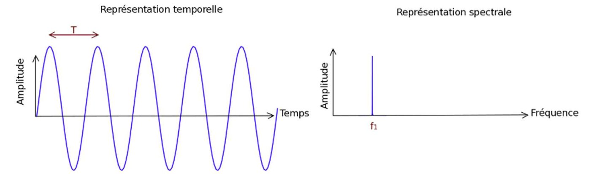
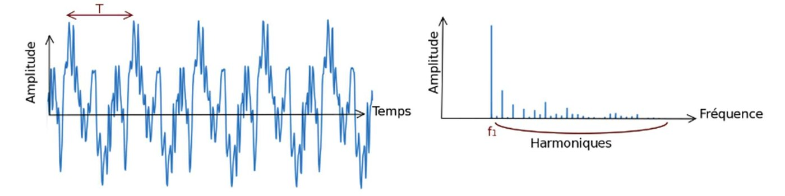
| Geste | Comment faire |
|---|---|
| Enregistrer | Clique sur le rond rouge pour démarrer, sur le carré pour arrêter. |
| Agrandir un signal | Sélectionne une partie de la bande son (clique et glisse), puis clique sur l'icône loupe pour l'ajuster à la largeur de la fenêtre. |
| Tracer le spectre | Onglet Analyse → Tracer le spectre… Puis : Taille = 4 096, Fonction = Fenêtre Welch, Axe = Fréquence linéaire (ou logarithmique si tu vois mal). |
| Lire une fréquence | Place la souris près d'un pic : la valeur s'affiche en bas de la fenêtre, du type Pic : 3515 Hz = −33,5 dB. |
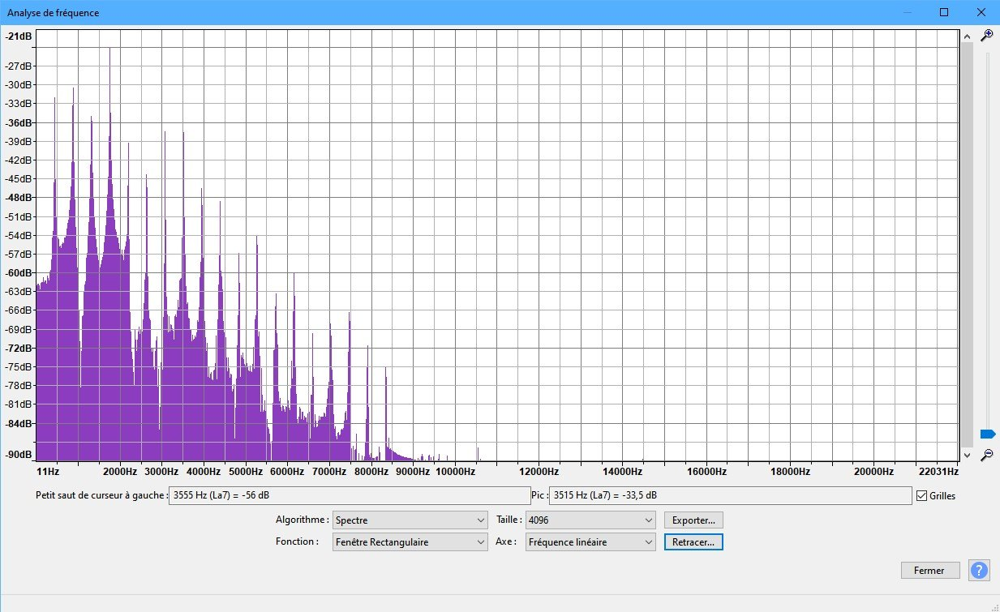
Enregistre le son produit par un diapason. Réalise le spectre en fréquence. Dépose ci-dessous une copie d'écran du signal et du spectre obtenus.
Voici la valeur des fréquences fondamentales (en Hz) de chaque note, pour plusieurs octaves. Repère la ligne du La : chaque colonne double la précédente.
| Note | −1 | 0 | 1 | 2 | 3 | 4 | 5 | 6 |
|---|---|---|---|---|---|---|---|---|
| Do | 16,35 | 32,7 | 65,4 | 130,8 | 262 | 523 | 1 047 | 2 093 |
| Do♯ | 17,3 | 34,6 | 69,3 | 138,6 | 277 | 554 | 1 109 | 2 217 |
| Ré | 18,35 | 36,7 | 73,4 | 146,8 | 294 | 587 | 1 175 | 2 349 |
| Ré♯ / Mi♭ | 19,45 | 38,9 | 77,8 | 155,6 | 311 | 622 | 1 245 | 2 489 |
| Mi | 20,6 | 41,2 | 82,4 | 164,8 | 330 | 659 | 1 319 | 2 637 |
| Fa | 21,8 | 43,7 | 87,3 | 174,6 | 349 | 698 | 1 397 | 2 794 |
| Fa♯ | 23,1 | 46,2 | 92,5 | 185 | 370 | 740 | 1 480 | 2 960 |
| Sol | 24,5 | 49 | 98 | 196,0 | 392 | 784 | 1 568 | 3 136 |
| Sol♯ / La♭ | 26 | 51,9 | 103,8 | 207,7 | 415 | 831 | 1 661 | 3 322 |
| La | 27,5 | 55 | 110,0 | 220 | 440 | 880 | 1 760 | 3 520 |
| La♯ / Si♭ | 29,1 | 58,3 | 116,5 | 233 | 466 | 932 | 1 865 | 3 729 |
| Si | 30,9 | 61,7 | 123,5 | 247 | 494 | 988 | 1 976 | 3 951 |
En utilisant le microphone d'un casque, essaie de reproduire cette note avec ta voix. Réalise le spectre associé et dépose-le.
Les deux dépôts de copie d'écran remplacent le « imprimer et coller ci-dessous » du dossier papier. Le mécanisme existe déjà dans le moteur (il sert dans la séquence SNT Internet) et l'image reste affichée dans la page.
⚠ Limite connue : aujourd'hui, ces dépôts ne sont pas repris dans la fiche de révision — c'est un manque déjà identifié dans les consignes SNT (§17.2), pas un défaut de cette page. Tant qu'il n'est pas comblé, l'élève doit garder sa copie d'écran de son côté.
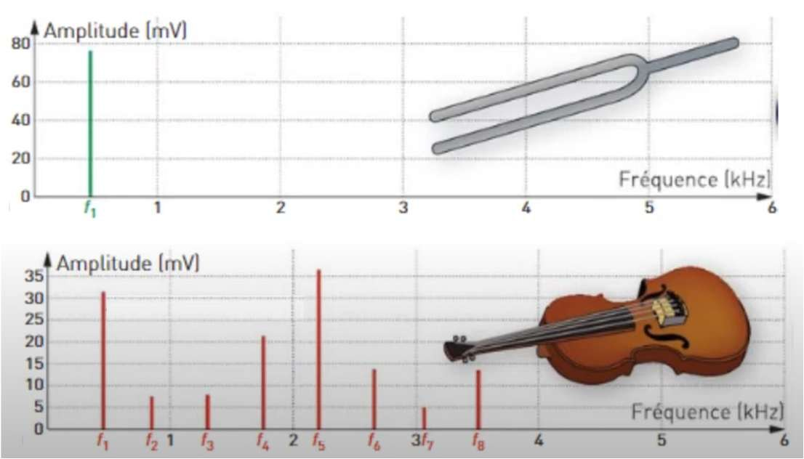
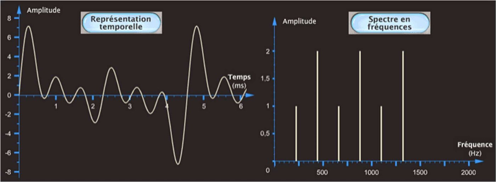
Le son émis par un instrument a été enregistré avec un logiciel d'acquisition. Parmi les trois spectres proposés, retrouve celui qui correspond au son enregistré — et justifie.
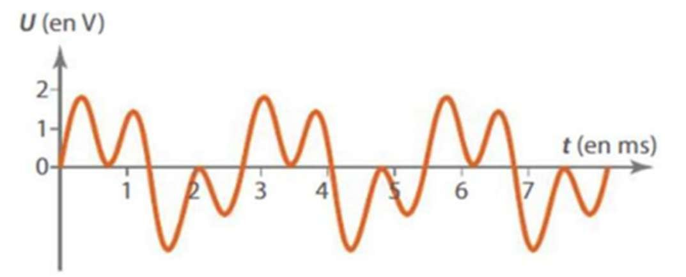
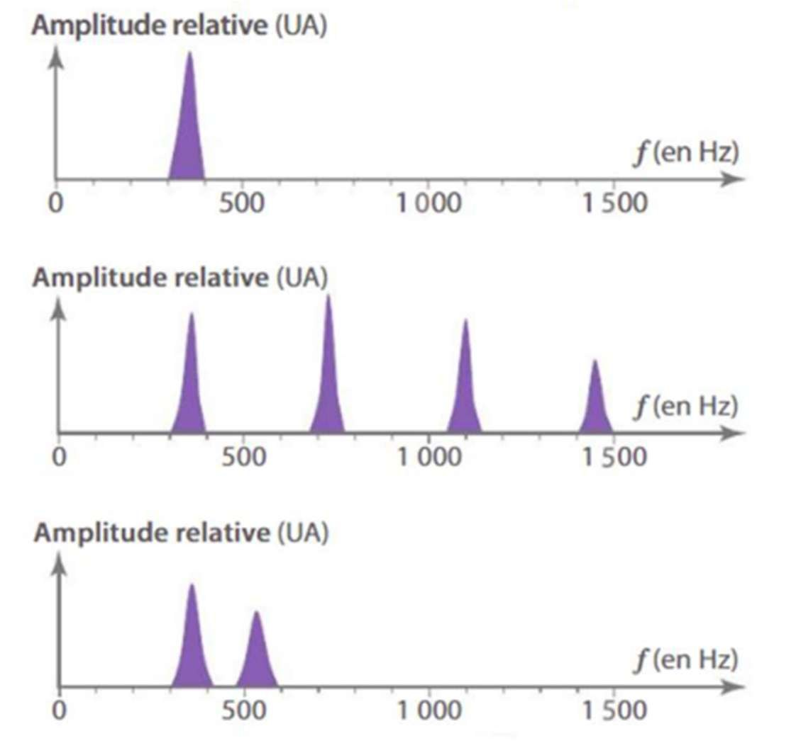
Trois notions du sous-thème 4.1 du programme officiel ne figurent nulle part dans le dossier d'activités :
Elles sont déjà écrites dans le dépôt : le chapitre de seconde T3-C1 « Émission et perception d'un son » les traite, en V1 intégrale, figures refaites et définitions corrigées après audit. Décision attendue : faut-il les rehausser au niveau 1re et les insérer ici (une quatrième étape en séance 1), ou les considérer comme acquises de seconde et n'en faire qu'un rappel ? Rien n'a été recopié pour l'instant.
Trois ateliers : la résonance (au bureau), la corde vibrante et la colonne d'air (sur ta paillasse). Chaque groupe passe sur chacun ; on met tout en commun à la fin.
🎬 La vidéo du dossier d'activités sur la résonance (QR code de la page 5).
Ton enseignant réalise une expérience mettant en jeu deux diapasons et une balle de tennis de table pendue à un fil. Observe attentivement.
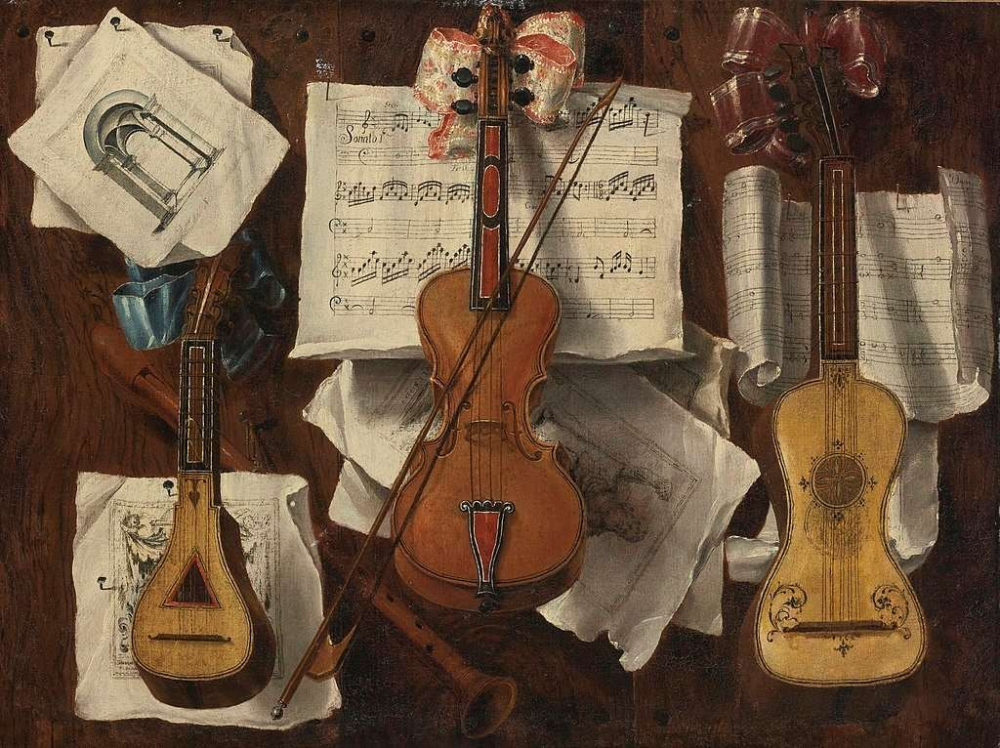
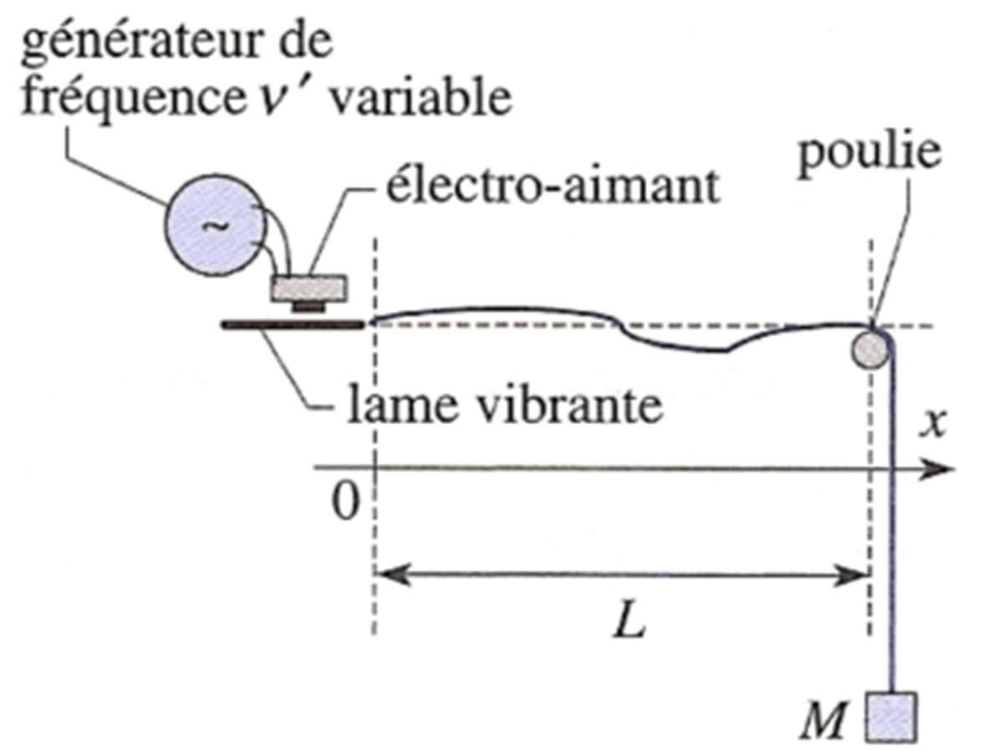
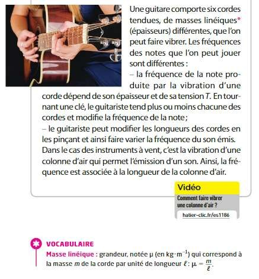
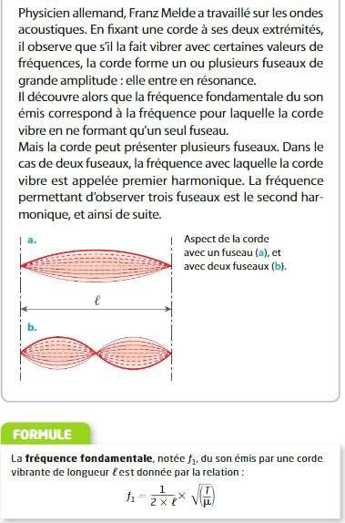
On fait varier la masse suspendue à l'extrémité de la corde. La tension est proportionnelle à cette masse : en changeant la masse, c'est bien la tension qu'on modifie. La fréquence fondamentale est obtenue lorsque tu observes un beau fuseau unique sur la corde.
Avec une masse de 100 g (soit 0,1 kg), on observe un fuseau unique pour une longueur de corde de L = 75 cm.
| Masse suspendue m (kg) | 0,002 | 0,005 | 0,01 | 0,02 | 0,05 | 0,1 | 0,2 |
|---|---|---|---|---|---|---|---|
| √m (√kg) | 0,0447 | 0,0707 | 0,1 | 0,1414 | 0,2236 | 0,3162 | 0,4472 |
| L (m) | 0,12 | 0,16 | 0,27 | 0,37 | 0,56 | 0,75 | 1,05 |
Il est possible de refaire l'expérience avec l'animation de l'université de Nantes (un service public, pas de traceur).
▶ Ouvrir l'animation « corde de Melde » (université de Nantes)
La fréquence de résonance de la colonne d'air est de 440 Hz. Règle le GBF de manière à ne créer qu'un seul fuseau. Déplace le microphone à l'intérieur de la colonne et note les positions des nœuds. Recommence pour 880 Hz, puis 1 320 Hz.
Pourquoi douze notes ? Parce que douze quintes tombent presque sur sept octaves — et que « presque » a occupé les musiciens pendant deux mille ans.
La vidéo dure environ 24 minutes et les questions suivent son minutage. Mets-la en pause à chaque bloc.
🎬 « Les mathématiques de la musique », avec Vled Tapas — la vidéo de l'activité introductive.
La correction d'origine écrit « 312 ≈ 29 ». C'est faux d'un facteur mille : 312 = 531 441 et 29 = 512. L'égalité correcte, qui découle de (3/2)12 ≈ 27, est 312 ≈ 219 (531 441 contre 524 288, à 1,4 % près) — et c'est bien cet écart de 1,4 % qui est le comma pythagoricien, la source de tout le problème.
La valeur 19 est donc demandée ci-dessus, avec l'indice qui la fait retrouver. À confirmer, et à corriger dans le document. Reste à décider si ce niveau de détail est demandé aux élèves : on peut aussi se contenter de « 12 quintes ≈ 7 octaves ».
Les autres vidéos du dossier d'activités, récupérées par leurs QR codes.
🎬 Vidéo du dossier — page 2.
🎬 Vidéo du dossier — page 8, section corde vibrante.
🎬 Vidéo du dossier — page 11, section colonne d'air.
🎬 Vidéo du dossier — page 12, section exercices.